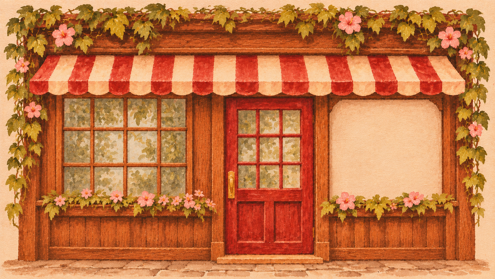
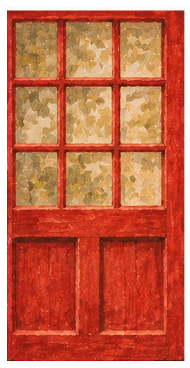
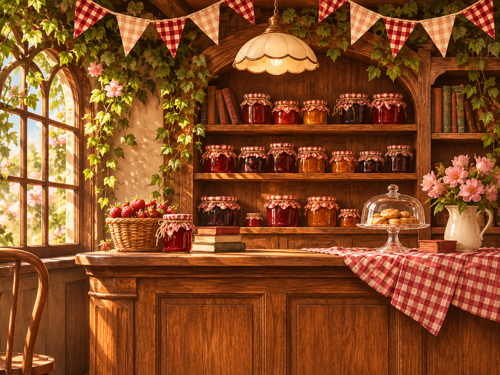
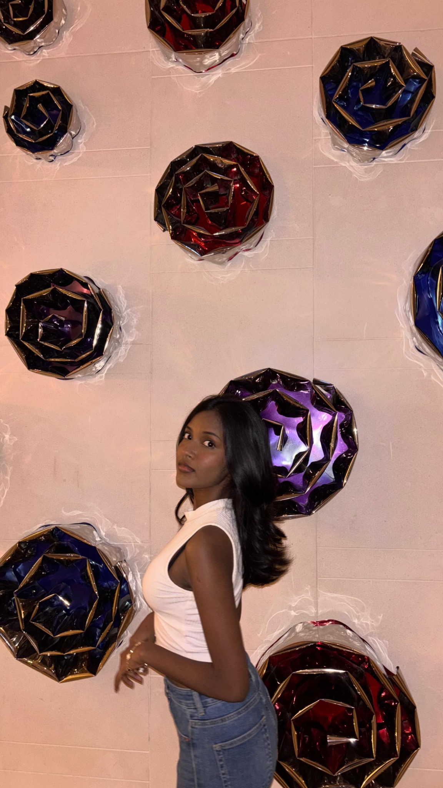
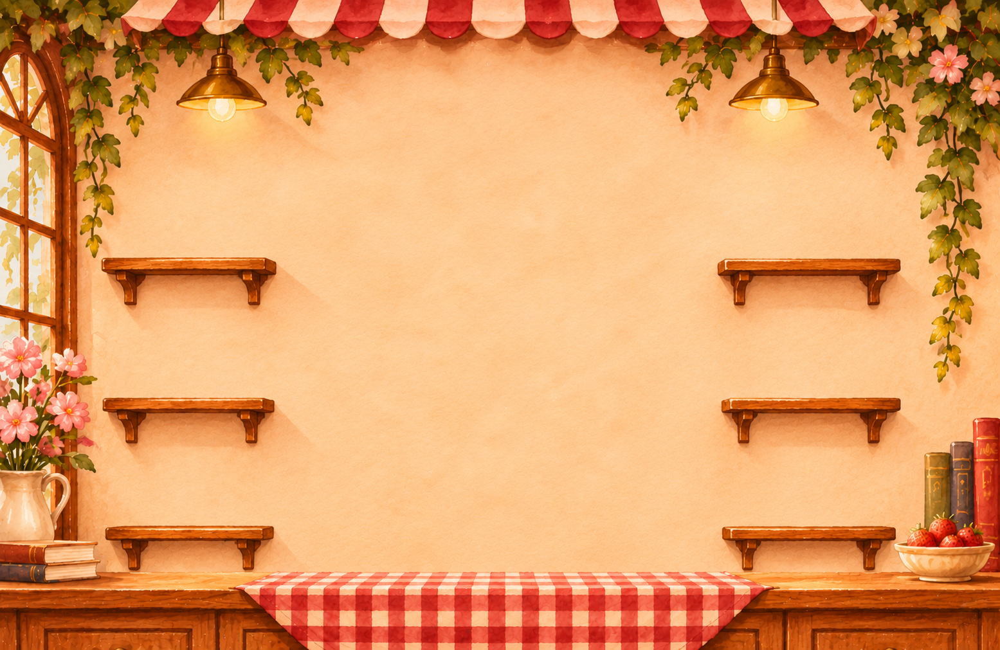
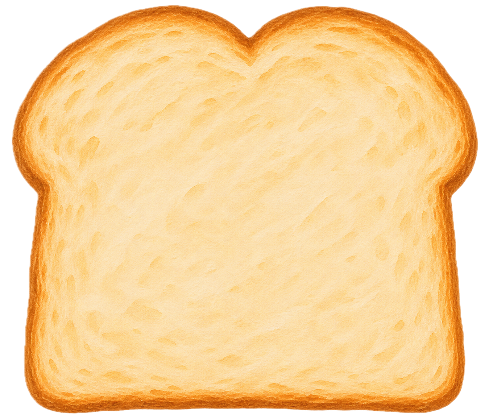
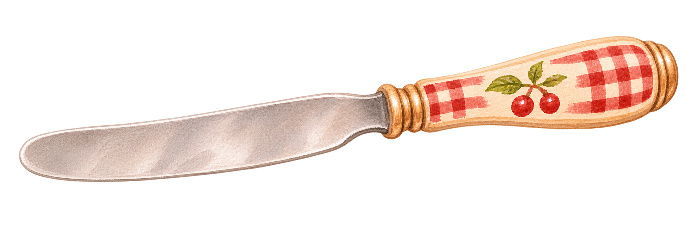

A little shop of ideas, experiments & everything in between.


MADE WITH A LITTLE JAM & A LOT OF IMAGINATION
A little shop of ideas, experiments & everything in between.


MADE WITH A LITTLE JAM & A LOT OF IMAGINATION


the maker, in her elementA multidisciplinary mind, drawn to the spaces where technology, business and creativity meet.
I'm curious about how ideas become experiences, products and businesses. I enjoy connecting dots, asking questions, shaping concepts and bringing people together to make things happen.
Currently brewing: B.Tech CSE (AI/ML) at SRM · BBA DBE at IIM Bangalore · Rarekey Labs · Orvia

A little taste of everything that makes me, me.


SIX LITTLE JARS · SIX DIFFERENT SIDES OF ME